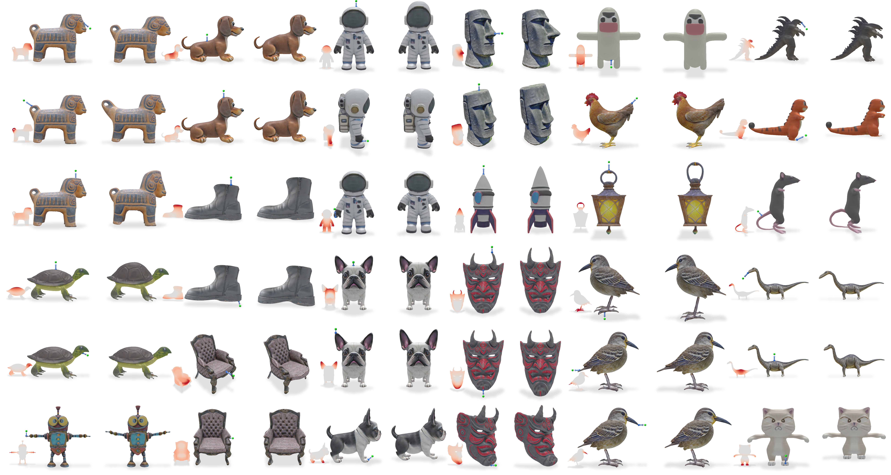

Deep Feature Deformation Weights
University of Chicago
Abstract. Handle-based mesh deformation is a classic paradigm in computer graphics which enables intuitive edits from sparse controls. Classical techniques are fast and precise, but require users to know the ideal distribution of handles apriori, which is often unintuitive and inconsistent across visually similar shapes. Handle sets cannot be adjusted easily, as weights are typically optimized through energies defined by the handle choices. Modern data-driven methods, on the other hand, provide semantic edits but sacrifice fine-grained control and speed. We propose a technique that achieves the best of both worlds: deep feature proximity yields smooth, visual-aware deformation weights with no additional regularization. Importantly, these weights are computed in real-time for any surface point, unlike prior methods which require expensive optimization. We introduce barycentric feature distillation, an improved feature distillation pipeline which leverages the full visual signal from shape renders to make distillation complexity robust to mesh resolution. This enables high resolution meshes to be processed in minutes versus potentially hours for prior methods. We preserve and extend classical properties through feature space constraints and locality weighting. Our field representation enables automatic visual symmetry detection, which we use to produce symmetry-preserving deformations. We show a proof-of-concept application which can produce deformations for meshes up to 1 million faces in real-time on a consumer-grade machine.

Handle translation results from the APAP dataset.

Barycentric Feature Distillation. TODO

Visual Symmetry Detection. TODO
This project was funded by NSF 2402894, 2304481, the United States - Israel Binational Science Foundation (BSF) 2022363, gifts from Adobe, Snap, Google, and The Bennett Family AI + Science Collaborative Research Program.
Website template made by Nam Anh Dinh.
TODO